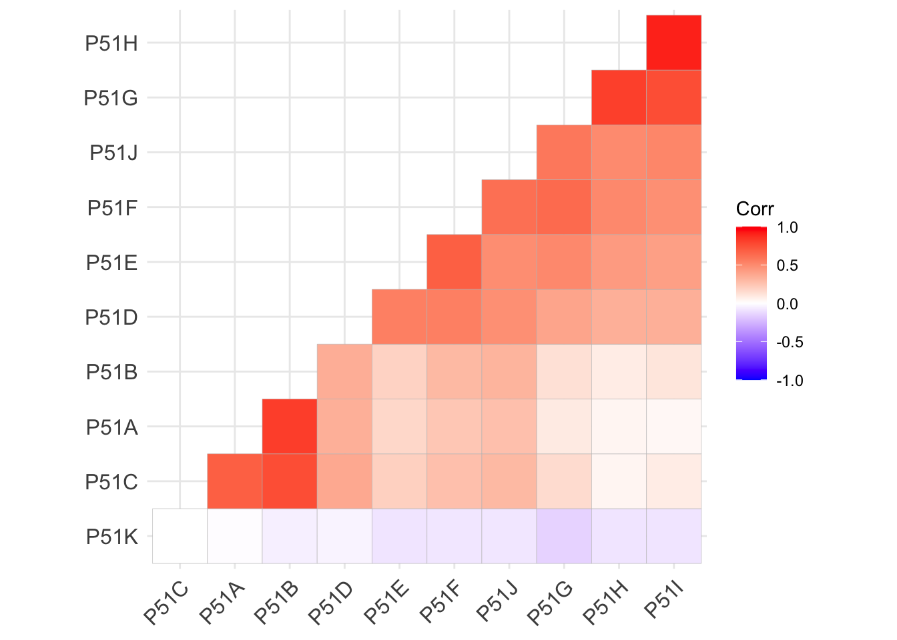
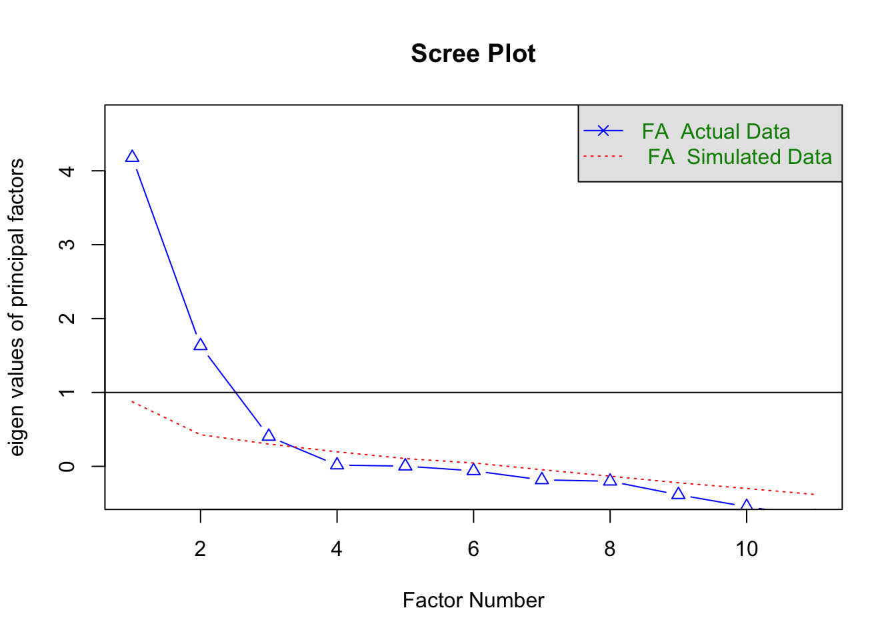
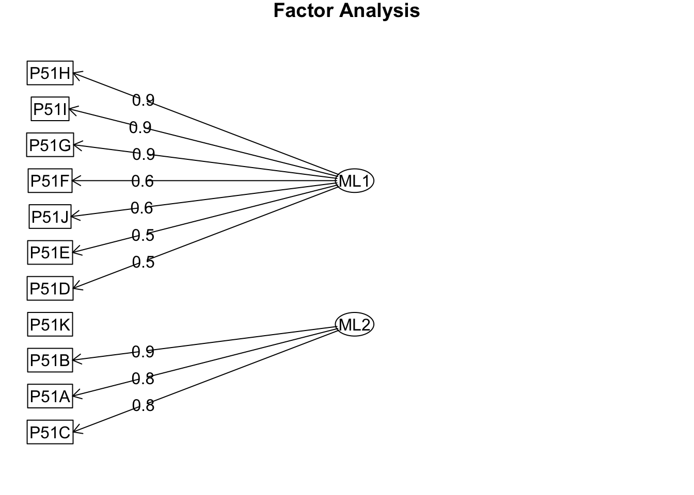
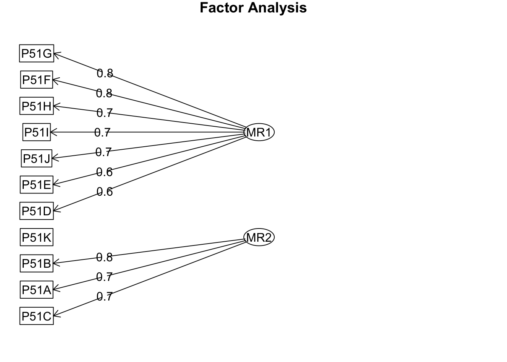
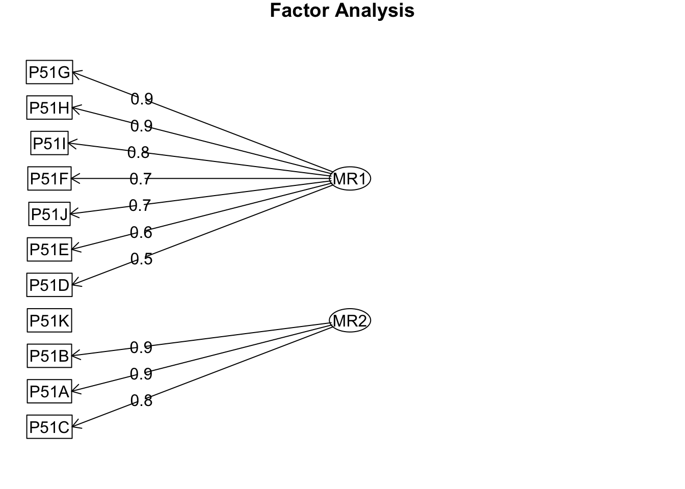

genero12$sex <- factor(genero12$SEXO, labels = c("Hombre", "Mujer"))
genero12$region1 <- factor(genero12$Ambito,labels = c("Lima", "Resto Urbano", "Rural"))
genero12$educ <- genero12$P48
genero12$educ[genero12$educ == 99] <- NA
Subset1 <- genero12[, c(1,108:118)]
NRO <- Subset1[, 1]
df <- Subset1[, 2:12]
df[df==9] <- NA
Subset1 <- cbind(NRO, df)
rm(df, NRO)Se utiliza la función ’ “cor” ’ para crear la matriz de correlaciones. Esta función toma la lista de variables y compara qué tan similares son entre sí. Puede medir la similitud en función de cómo están distribuidos los valores de las variables mediane el coeficiente de correlación de ’ Pearson ’. Esta medida cuantifica la relación lineal entre dos variables.
## P51A P51B P51C P51D P51E P51F
## P51A 1.00000000 0.82133251 0.691606502 0.3441905 0.16530773 0.24027450
## P51B 0.82133251 1.00000000 0.759130028 0.3468787 0.19271776 0.30113203
## P51C 0.69160650 0.75913003 1.000000000 0.3705105 0.19657388 0.27111912
## P51D 0.34419046 0.34687874 0.370510517 1.0000000 0.55158805 0.54890481
## P51E 0.16530773 0.19271776 0.196573885 0.5515881 1.00000000 0.68635367
## P51F 0.24027450 0.30113203 0.271119123 0.5489048 0.68635367 1.00000000
## P51G 0.09409781 0.13457900 0.147623837 0.3931127 0.51361372 0.64028168
## P51H 0.04433515 0.08408269 0.037425855 0.3421292 0.42816260 0.51422129
## P51I 0.02835823 0.10609463 0.083052695 0.3367763 0.40655062 0.48462054
## P51J 0.27303697 0.31888518 0.296430477 0.4841850 0.48884404 0.62090865
## P51K -0.01101479 -0.04913792 -0.003730479 -0.0397010 -0.08681838 -0.07740018
## P51G P51H P51I P51J P51K
## P51A 0.09409781 0.04433515 0.02835823 0.27303697 -0.011014789
## P51B 0.13457900 0.08408269 0.10609463 0.31888518 -0.049137916
## P51C 0.14762384 0.03742585 0.08305270 0.29643048 -0.003730479
## P51D 0.39311271 0.34212921 0.33677628 0.48418498 -0.039701005
## P51E 0.51361372 0.42816260 0.40655062 0.48884404 -0.086818382
## P51F 0.64028168 0.51422129 0.48462054 0.62090865 -0.077400177
## P51G 1.00000000 0.81053684 0.75936595 0.57915322 -0.145358980
## P51H 0.81053684 1.00000000 0.90767306 0.50333860 -0.094473995
## P51I 0.75936595 0.90767306 1.00000000 0.52248820 -0.094298458
## P51J 0.57915322 0.50333860 0.52248820 1.00000000 -0.076420947
## P51K -0.14535898 -0.09447399 -0.09429846 -0.07642095 1.000000000
La prueba de Bartlett sirve para evaluar si hay correlaciones significativas entre las variables en la matriz de correlaciones en comparación con la matriz de identidad. De esta manera se compara que la matriz sea igual a una matriz de identidad (HO) y buscamos que nuestra matriz sea diferente(H1). Por lo que buscamos un p-vlaue menora 0.05.
## $chisq
## [1] 706.6443
##
## $p.value
## [1] 6.239193e-114
##
## $df
## [1] 55El valor de Kaiser-Meyer-Olkin factor adequacy (KMO) obtenido indica la adecuación para realizar análisis factorial.
Lo que hace es eliminar la influencia o la información que no aporta en la relación con las variables observables, para así ver la correlación real, a este proceso se le denomina correlación parcial.
Lo que buscamos es que cada correlación parcial sea mayor a 0.5.
Los valores de MSA (Medida de Adecuación por Ítem) indican la adecuación individual de cada variable para los análisis mencionados.
## Kaiser-Meyer-Olkin factor adequacy
## Call: KMO(r = matri_01)
## Overall MSA = 0.82
## MSA for each item =
## P51A P51B P51C P51D P51E P51F P51G P51H P51I P51J P51K
## 0.75 0.72 0.82 0.91 0.87 0.86 0.88 0.74 0.77 0.94 0.67Este grafico se utiliza determinar el número óptimo de factores a extraer de un conjunto de datos.
En el eje X del gráfico, se muestra el número de factores que se están considerando para el análisis factorial.
En el eje Y del gráfico, se representa la proporción de varianza explicada. Esta proporción indica cuánta varianza de los datos puede ser explicada por los factores extraídos.
El punto en el gráfico donde la línea azul cruza o se aleja significativamente de las barras punteadas indica el número óptimo de factores a extraer. Este punto se considera el punto de inflexión, donde agregar más factores no proporcionaría una mejora sustancial en la varianza explicada.

## Parallel analysis suggests that the number of factors = 3 and the number of components = NAStandardized loadings (cargas estandarizadas): Representan la relación entre cada variable y cada factor en el análisis factorial. Valores más altos indican una mayor asociación entre la variable y el factor.
Com: Representa la comunalidad de cada variable, es una medida de la varianza total de las variables que se explica mediante los factores. Valores más altos indican una mayor proporción de varianza explicada por los factores.
SS loadings: Representa la suma de los cuadrados de las cargas factoriales al cuadrado para cada factor. Indica la cantidad de varianza total explicada por cada factor.
AF1.1<- fa(matri_01, nfactors = 2, rotate = "none", fm="ml")
AF1.2<- fa(matri_01, nfactors = 2, rotate = "none", fm="minres")
AF1.1## Factor Analysis using method = ml
## Call: fa(r = matri_01, nfactors = 2, rotate = "none", fm = "ml")
## Standardized loadings (pattern matrix) based upon correlation matrix
## ML1 ML2 h2 u2 com
## P51A 0.21 0.85 0.761 0.239 1.1
## P51B 0.27 0.88 0.855 0.145 1.2
## P51C 0.23 0.78 0.662 0.338 1.2
## P51D 0.47 0.30 0.309 0.691 1.7
## P51E 0.53 0.11 0.290 0.710 1.1
## P51F 0.63 0.18 0.433 0.567 1.2
## P51G 0.85 -0.09 0.733 0.267 1.0
## P51H 0.93 -0.20 0.913 0.087 1.1
## P51I 0.91 -0.18 0.862 0.138 1.1
## P51J 0.63 0.20 0.430 0.570 1.2
## P51K -0.11 0.00 0.013 0.987 1.0
##
## ML1 ML2
## SS loadings 3.90 2.36
## Proportion Var 0.35 0.21
## Cumulative Var 0.35 0.57
## Proportion Explained 0.62 0.38
## Cumulative Proportion 0.62 1.00
##
## Mean item complexity = 1.2
## Test of the hypothesis that 2 factors are sufficient.
##
## The degrees of freedom for the null model are 55 and the objective function was 7.48
## The degrees of freedom for the model are 34 and the objective function was 1.06
##
## The root mean square of the residuals (RMSR) is 0.08
## The df corrected root mean square of the residuals is 0.1
##
## Fit based upon off diagonal values = 0.96
## Measures of factor score adequacy
## ML1 ML2
## Correlation of (regression) scores with factors 0.98 0.96
## Multiple R square of scores with factors 0.96 0.92
## Minimum correlation of possible factor scores 0.91 0.84## Factor Analysis using method = minres
## Call: fa(r = matri_01, nfactors = 2, rotate = "none", fm = "minres")
## Standardized loadings (pattern matrix) based upon correlation matrix
## MR1 MR2 h2 u2 com
## P51A 0.44 0.74 0.734 0.27 1.6
## P51B 0.50 0.75 0.822 0.18 1.7
## P51C 0.46 0.67 0.657 0.34 1.8
## P51D 0.62 0.12 0.406 0.59 1.1
## P51E 0.65 -0.09 0.429 0.57 1.0
## P51F 0.77 -0.07 0.603 0.40 1.0
## P51G 0.80 -0.37 0.778 0.22 1.4
## P51H 0.74 -0.46 0.762 0.24 1.7
## P51I 0.73 -0.42 0.702 0.30 1.6
## P51J 0.72 -0.03 0.523 0.48 1.0
## P51K -0.11 0.05 0.015 0.99 1.3
##
## MR1 MR2
## SS loadings 4.32 2.11
## Proportion Var 0.39 0.19
## Cumulative Var 0.39 0.58
## Proportion Explained 0.67 0.33
## Cumulative Proportion 0.67 1.00
##
## Mean item complexity = 1.4
## Test of the hypothesis that 2 factors are sufficient.
##
## The degrees of freedom for the null model are 55 and the objective function was 7.48
## The degrees of freedom for the model are 34 and the objective function was 1.28
##
## The root mean square of the residuals (RMSR) is 0.06
## The df corrected root mean square of the residuals is 0.08
##
## Fit based upon off diagonal values = 0.98
## Measures of factor score adequacy
## MR1 MR2
## Correlation of (regression) scores with factors 0.96 0.95
## Multiple R square of scores with factors 0.93 0.90
## Minimum correlation of possible factor scores 0.86 0.80

La rotación de los factores es un procedimiento matemático que se aplica para reorganizar y simplificar los factores, de modo que sean más fáciles de entender e interpretar.
La rotación de los factores se basa en las correlaciones entre las variables y busca una configuración en la que las correlaciones sean más claras y tengan una estructura más simple.
Al aplicar la rotación de los factores, se obtiene una nueva configuración en la que los factores están más separados y se destacan las relaciones más fuertes entre las variables. Esto facilita la interpretación de los factores y permite comprender mejor cómo se agrupan las variables.
AF1.3 <- fa(matri_01, nfactors = 2, rotate = "varimax", fm="ml")
AF1.4 <- fa(matri_01, nfactors = 2, rotate = "varimax", fm="minres")
fa.diagram(AF1.3)
##
## Loadings:
## ML1 ML2
## P51A 0.870
## P51B 0.915
## P51C 0.807
## P51D 0.412 0.373
## P51E 0.504
## P51F 0.598
## P51G 0.855
## P51H 0.954
## P51I 0.928
## P51J 0.587
## P51K
##
## ML1 ML2
## SS loadings 3.671 2.589
## Proportion Var 0.334 0.235
## Cumulative Var 0.334 0.569##
## Loadings:
## MR1 MR2
## P51A 0.856
## P51B 0.901
## P51C 0.805
## P51D 0.498 0.397
## P51E 0.619
## P51F 0.720
## P51G 0.881
## P51H 0.871
## P51I 0.837
## P51J 0.657
## P51K
##
## MR1 MR2
## SS loadings 3.855 2.576
## Proportion Var 0.350 0.234
## Cumulative Var 0.350 0.585## P51K P51E P51D P51J P51F P51C P51G
## 0.01291514 0.28952844 0.30857428 0.43022686 0.43311018 0.66183994 0.73275013
## P51A P51B P51I P51H
## 0.76126770 0.85461580 0.86202164 0.91319406## P51I P51H P51G P51A P51C P51B P51K P51E
## 1.002214 1.005585 1.007061 1.013824 1.030089 1.039675 1.074277 1.277172
## P51F P51J P51D
## 1.405821 1.468941 1.981020## P51H P51I P51B P51A P51G P51C P51F
## 0.08680594 0.13797836 0.14538420 0.23873230 0.26724987 0.33816006 0.56688982
## P51J P51D P51E P51K
## 0.56977314 0.69142572 0.71047156 0.98708486Notas finales
*Factoring method fm=“minres” will do a minimum residual as will fm=“uls”. Both of these use a first derivative. fm=“ols” differs very slightly from “minres” in that it minimizes the entire residual matrix using an OLS procedure but uses the empirical first derivative. This will be slower. fm=“wls” will do a weighted least squares (WLS) solution, fm=“gls” does a generalized weighted least squares (GLS), fm=“pa” will do the principal factor solution, fm=“ml” will do a maximum likelihood factor analysis. fm=“minchi” will minimize the sample size weighted chi square when treating pairwise correlations with different number of subjects per pair. fm =“minrank” will do a minimum rank factor analysis. “old.min” will do minimal residual the way it was done prior to April, 2017 (see discussion below). fm=“alpha” will do alpha factor analysis as described in Kaiser and Coffey (1965) Al respecto vease https://rdrr.io/cran/psych/man/fa.html